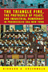

Browse
other Author lists:
A B C
D E F
G H I
J K L
M N O
P Q R
S T U
V W X
Y Z |
|
Ecological
Politics
Ecofeminists and the Greens
Gaard,
Greta
337 pp • 6x9 • Fall 1997
paper 978-1-56639-570-0
cloth 978-1-56639-569-4
|

|
Ecofeminism
edited
by Gaard, Greta
304 pp • 6x9 • Fall 1992
paper 978-0-87722-989-6
cloth 978-0-87722-988-9
|
 |
The Next Social Contract
Animals, the Anthropocene, and Biopolitics
Gabardi, Wayne
242 pp • 6x9 • Spring 2017
paper 978-1-4399-1412-0
cloth 978-1-4399-1411-3 |

|
Trilogy of Social Ethics
Orthodox - Catholic - Protestant
Gabriel, Ingeborg G., Ulrich H.J. Körtner and Alexandros K. Papaderos
320 pp • 6x9 • Fall 2013
paper 978-0-931214-16-5 |
|
Washington,
D.C.
Inner-City Revitalization and Minority Suburbanization
Gale,
Dennis E.
259 pp • Fall 1987
paper 978-0-87722-777-9
cloth 978-0-87722-496-9 |
 |
The Politics of Staying Put
Condo Conversion and Tenant Right-to-Buy in Washington, DC
Gallaher, Carolyn
278 pp • 6x9 • Spring 2016
paper 978-1-4399-1265-2
cloth 978-1-4399-1264-5
|
 |
Philadelphia
magazine's Ultimate Restaurant Guide
edited
by White, April, foreword by Maria Gallagher
192 pp • 5.5x8.25 • Fall 2004
cloth 978-1-59213-146-4
|
 |
Health
and Health Care In Developing Countries
Sociological Perspectives
edited
by Conrad, Peter and Eugene B. Gallagher
336 pp • 6x9 • Spring 1993
paper 978-1-56639-027-9 |
|
Taxes
and State Power
Political Instability in Bolivia, 1900-1950
Gallo,
Carmenza
200 pp • Spring 1991
paper 978-0-87722-800-4 |
 |
Transnational
Asian American Literature
Sites and Transits
edited
by Lim, Shirley Geok-lin, John Blair Gamber, Stephen Hong Sohn and
Gina Valentino 320 pp • 6x9 • Fall
2005
paper 978-1-59213-451-9
cloth 978-1-59213-450-2
|
|
Reducing
Workweeks to Prevent Layoffs
The Economic and Social Impacts of Unemployment Insurance-Supported
Work Sharing
Best,
Fred, foreword by Herbert J. Gans
228 pp • Fall 1987
paper 978-0-87722-506-5 |
 |
Separate
Societies
Poverty and Inequality in U.S. Cities
Second Edition
Goldsmith,
William W. and Edward J. Blakely, foreword by President Bill Clinton
268 pp • 6x9 • Spring 2010
paper 978-4399-0292-9
cloth 978-4399-0291-2
|
 |
Revolutionary
Passage
From Soviet to Post-Soviet Russia, 1985-2000
Garcelon,
Marc
328 pp • 6x9 • Spring 2005
paper 978-1-59213-362-8
cloth 978-1-59213-361-1
|
 |
Working
Poor
Farmworkers in the United States
Griffith,
David and Ed Kissam with Jeromino Camposeco, Anna Garc�a, Max
Pfeffer, David Runsten, and Manuel Valdes Pizzini
368 pp • 6x9 • Fall 1994
paper 978-1-56639-239-6
cloth 978-1-56639-238-9 |

|
Latino Lives in America
Making It Home
Fraga, Luis R., John A. Garcia, Rodney E. Hero, Michael Jones-Correa, Valerie Martinez-Ebers, and Gary Segura
224 pp • 5.5x8.25 • Spring 2010
paper 978-1-43990-049-9
cloth 978-1-43990-048-2
|
 |
Arsenio Rodr�guez and the Transnational Flows of Latin Popular Music
Garcia,
David F. 224 pp � 6x9 � Spring 2006
paper 978-1-59213-386-4
cloth 978-1-59213-385-7
|
 |
Thinking Your Way to Freedom
A Guide to Owning Your Own Practical Reasoning
Gardner,
Susan T., illustrations by Dirk van Stralen
296 pp • 8.5x11 • Fall 2008
paper 978-1-59213-867-8
|
 |
Families
in the U.S.
Kinship and Domestic Politics
edited
by Hansen, Karen V. and Anita Ilta Garey
944 pp • 7x10 • Spring 1998
paper 978-1-56639-590-8
cloth 978-1-56639-589-2
|
|
Weaving
Work and Motherhood
Garey,
Anita Ilta
240 pp • 6x9 • Spring 1999
paper 978-1-56639-700-1
cloth 978-1-56639-669-8
|
 |
Beyond
Morality
Garner,
Richard
424 pp • 6x9 • Fall 1993
paper 978-1-56639-108-5
cloth 978-1-56639-076-7 |

|
The
New Chicago
A Social and Cultural Analysis
edited by Garner, Roberta, John P. Koval, Larry Bennett, Michael
I. J. Bennett, Fassil Demissie and Kiljoong Kim
384 pp • 7x10 • Fall 2006
paper 978-1-59213-088-7
cloth 978-1-59213-087-0
|
 |
Policing
Pop
edited
by Cloonan, Martin and Reebee Garofalo
256 pp • 7x10 • Fall 2002
paper 978-1-56639-990-6
cloth 978-1-56639-989-0
|
 |
Rethinking
Protestantism in Latin America
edited
by Garrard-Burnett, Virginia and David Stoll
240 pp • 5.5x8.25 • Fall 1993
paper 978-1-56639-103-0
cloth 978-1-56639-102-3
|
 |
Mary
Heaton Vorse
The Life of an American Insurgent
Garrison,
Dee
400 pp • Spring 1989
paper 978-0-87722-781-6
cloth 978-0-87722-601-7 |
|
Derrida
and Wittgenstein
Garver,
Newton and Seung-Chong Lee
264 pp • 5.5x8.25 • Spring 1994
paper 978-1-56639-374-4
cloth 978-1-56639-172-6 |
 |
Justice,
Law, and Violence
edited
by Brady, James B. and Newton Garver
368 pp • Fall 1991
paper 978-0-87722-843-1 |
 |
Environmental
Accidents
Personal Injury and Public Responsibiltiy
Gaskins,
Richard H.
440 pp • Spring 1989
paper 978-0-87722-708-3
cloth 978-0-87722-607-3 |
 |
My
Father's Testament
Memoir of a Jewish Teenager, 1938-1945
Gastfriend,
Edward, afterword by Bj�rn Krondorfer
187 pp • 5.5x8.25 • Fall 1999
paper 978-1-56639-735-3
cloth 978-1-56639-734-6
|
 < < |
We
Make the Road by Walking
Conversations on Education and Social Change
Horton,
Myles and Paulo Freire, edited by Brenda Bell, John Gaventa
and John Peters
296 pp • 5.5x8.25 • Fall 1990
paper 978-0-87722-775-5
cloth 978-0-87722-771-7
|
 |
Communities
in Economic Crisis
Appalachia and the South
edited
by Gaventa, John, Barbara Ellen Smith and Alex Willingham
336 pp • Fall 1989
paper 978-0-87722-650-5
cloth 978-0-87722-649-9 |
 |
Cuttin'
the Body Loose
Historical, Biological, and Personal Approaches to Death and Dying
Gavin,
William Joseph
256 pp • 5.5x8.25 • Spring 1995
paper 978-1-56639-298-3
cloth 978-1-56639-297-6 |
 |
William
James and the Reinstatement of the Vague
Gavin,
William Joseph
240 pp • 5.5x8.25 • Fall 1992
paper 978-0-87722-946-9 |
 |
Popular
Organization and Democracy in Rio De Janeiro
A Tale of Two Favelas
Gay,
Robert
208 pp • 5.5x8.25 • Fall 1993
paper 978-1-56639-120-7
cloth 978-1-56639-119-1
|
 |
Lucia
Testimonies of a Brazilian Drug Dealer's Woman
Gay,
Robert
240 pp • 6x9 • Spring 2005
paper 978-1-59213-339-0
cloth 978-1-59213-338-3
|
 |
Reverse Engineering Social Media
Software, Culture, and Political Economy in New Media Capitalism
Gehl, Robert W.
226 pp • 5.5x8.25 • Spring 2014
paper 978-1-4399-1035-1
cloth 978-1-4399-1034-4 |
|
Evil
and the Evidence for God
The Challenge of John Hick's Theodicy
Geivett,
R. Douglas, afterword by John Hick
288 pp • 6x9 • Fall 1993
paper 978-1-56639-397-3
cloth 978-1-56639-094-1
|
 |
Women
of Japan and Korea
Continuity and Change
edited
by Gelb, Joyce and Marian Lief Palley
320 pp • 6x9 • Fall 1994
paper 978-1-56639-224-2
cloth 978-1-56639-223-5
|
 |
Detroit
Lives
edited
by Mast, Robert H., foreword by Dan Georgakas
368 pp • 6x9 • Fall 1994
paper 978-1-56639-226-6
cloth 978-1-56639-225-9 |
 |
Free
Trade and Uneven Development
The North American Apparel Industry after NAFTA
edited
by Gereffi, Gary, David Spener and Jennifer Bair
368 pp • 7x10 • Fall 2002
paper 978-1-56639-968-5
cloth 978-1-56639-967-8
|

|
Ladies and Gents
Public Toilets and Gender
edited by Gershenson, Olga, Barbara Penner
262 pp • 6x9 • Spring 2009
paper 978-1-59213-940-8
cloth 978-1-59213-939-2
|
 |
Families
and Work
edited
by Gerstel, Naomi and Harriet Engel Gross
576 pp • Spring 1987
paper 978-0-87722-469-3
cloth 978-0-87722-467-9 |
 |
Revolution By Love
edited by Ghandour, Dala, Emna Ben Yedder, Mohammed Masbah and Steve Parks
194 pp • 5x7 • Spring 2014
cloth 978-0-98404-299-9 |
 |
Trading
Down
Africa, Value Chains, and the Global Economy
Gibbon,
Peter and Stefano Ponte
272 pp • 6x9 • Spring 2005
paper 978-1-59213-368-0
cloth 978-1-59213-367-3
|
 |
Pimping Fictions
African American Crime Literature and the Untold Story of Black Pulp Publishing
Gifford, Justin
216 pp • 6x9 • Spring 2013
paper 978-1-4399-0811-2
cloth 978-1-4399-0810-5
|
|
Another
Chance
America Since World War II
Gilbert,
James
256 pp • Spring 1981
paper 978-0-87722-224-8 |
 |
Rethinking
Rental Housing
Gilderbloom,
John I. and Richard P. Appelbaum, foreword by Joe R. Feagin
296 pp • Fall 1987
paper 978-0-87722-538-6
cloth 978-0-87722-498-3 |
|
Confronting
the Margaret Mead Legacy
Scholarship, Empire, and the South Pacific
edited
by Foerstel, Lenora and Angela Gilliam
309 pp • Fall 1991
paper 978-1-56639-261-7
cloth 978-0-87722-886-8 |
 |
In a Queer Voice
Journeys of Resilience from Adolescence to Adulthood
Sadowski, Michael, foreword by Carol Gilligan
206 pp • 6x9 • Fall 2012
paper 978-1-4399-0802-0
cloth 978-1-4399-0801-3 |

|
The Dance of Politics
Gender, Performance, and Democratization in Malawi
Gilman, Lisa
268 pp • 6x9 • Spring 2009
paper 978-1-59213-986-6
cloth 978-1-59213-985-9
|

|
Against Capital in the Twenty-First Century
A Reader of Radical Undercurrents
edited by Asimakopoulos, John and Richard Gilman-Opalsky
390 pp • 6x9 • Fall 2017
paper 978-1-4399-1358-1
cloth 978-1-4399-1357-4
|
 |
Fire
on the Earth
Anselm Kiefer and the Postmodern World
Gilmour,
John C.
272 pp • Spring 1990
paper 978-0-87722-962-9
cloth 978-0-87722-690-1 |
 |
Workforce
Intermediaries for the Twenty-first Century
edited
by Giloth, Robert P.
432 pp • 6x9 • Fall 2003
paper 978-1-59213-204-1
|
 |
Workforce
Development Politics
Civic Capacity and Performance
edited
by Giloth, Robert P.
296 pp • 6x9 • Fall 2003
paper 978-1-59213-229-4
cloth 978-1-59213-228-7
|
 |
National
Lawyers Guild
From Roosevelt through Reagan
edited
by Ginger, Ann Fagan and Eugene M. Tobin, foreword by Clark
Ramsey
344 pp • Fall 1987
paper 978-0-87722-488-4 |

|
Environmental Activism and the Urban Crisis
Baltimore, St. Louis, Chicago
Gioielli, Robert R.
224 pp • 6x9 • Spring 2014
paper 978-1-4399-0466-4
cloth 978-1-4399-0465-7 |
 |
Hollywood
Modernism
Film and Politics in the Age of the New Deal
Giovacchini,
Saverio
304 pp • 6x9 • Spring 2001
paper 978-1-56639-863-3
cloth 978-1-56639-862-6
|
 |
Ideology,
Culture and the Process of Schooling
Giroux,
Henry A.
250 pp • Fall 1981
paper 978-0-87722-370-2
cloth 978-0-87722-228-6
|
 |
Choosing
Equality
The Case for Democratic Schooling
Bastian,
Ann, Norm Fruchter, Marilyn Gittell, Kenneth Haskins and Colin
Greer, foreword by James P. Comer
222 pp • 5.5x8.25 • Fall 1986
paper 978-0-87722-454-9
cloth 978-0-87722-438-9 |
 |
Women's
Paid and Unpaid Labor
The Work Transfer in Health Care and Retailing
Glazer,
Nona Y.
360 pp • 6x9 • Fall 1992
paper 978-1-56639-199-3
cloth 978-0-87722-979-7 |
 |
Issei,
Nisei, War Bride
Three Generations of Japanese American Women in Domestic Service
Glenn,
Evelyn Nakano
290 pp • 5.5x8.25 • Spring 1986
paper 978-0-87722-564-5
cloth 978-0-87722-412-9 |
 |
An
American Feminist in Palestine
The Intifada Years
Gluck,
Sherna Berger
248 pp • 6x9 • Fall 1994
paper 978-1-56639-191-7
cloth 978-1-56639-190-0
|
 |
Choosing State Supreme Court Justices
Merit Selection and the Consequences of Institutional Reform
Goelzhauser, Greg
192 pp • 5.5x8.25 • Spring 2016
paper 978-1-4399-1340-6
cloth 978-1-4399-1339-0
|
 |
Individual
Voices, Collective Visions
Fifty Years of Women in Sociology
edited
by Goetting, Ann and Sarah Fenstermaker
376 pp • 6x9 • Fall 1994
paper 978-1-56639-251-8
cloth 978-1-56639-250-1 |
|
The Strange Music of Social Life
A Dialogue on Dialogic Sociology
Bell, Michael Mayerfeld, edited by Ann Goetting 248 pp • 5.5x8.25 • Spring 2011
paper 978-1-4399-0724-5
cloth 978-1-4399-0723-8
|

|
Global Philadelphia
Immigrant Communities Old and New
Edited by Takenaka, Ayumi and Mary Johnson Osirim
312 pp • 6x9 • Spring 2010
paper 978-1-43990-012-3
cloth 978-1-43990-013-0
|
 |
Shelter
Burden
Local Politics and Progressive Housing Policy
Goetz,
Edward G.
264 pp • 5.5x8.25 • Fall 1993
paper 978-1-56639-055-2 |
 |
Jewish
Identity
edited
by Goldberg, David Theo and Michael Krausz
344 pp • 6x9 • Spring 1993
paper 978-1-56639-040-8
cloth 978-1-56639-039-2 |
 |
Philadelphia Mural Arts @ 30
edited by Golden, Jane and David Updike
208 pp • 10x8 • Spring 2014
cloth 978-1-4399-1131-0 |
 |
Philadelphia
Murals and the Stories They Tell
Golden,
Jane, Robin Rice and Monica Yant Kinney, photographs by David
Graham and Jack Ramsdale
160 pp • 9x11 • Fall 2002
paper 978-1-56639-951-7
|
|
More
Philadelphia Murals and the Stories They Tell
Golden, Jane, Robin Rice and Natalie Pompilio, photographs
by David Graham and Jack Ramsdale
160 pp • 9x11 • Fall 2006
cloth 978-1-59213-527-1
|
|
Separate Societies
Poverty and Inequality in U.S. Cities
Second Edition
Goldsmith, William W. and Edward J. Blakely
268 pp • 6x9 • Spring 2010
paper 978-1-43990-292-9
cloth 978-1-43990-291-2
|

|
Campaign Advertising and American Democracy
Franz, Michael M., Paul B. Freedman, Kenneth M. Goldstein and Travis N. Ridout
216 pp • 6x9 • Fall 2007
paper 978-1-59213-456-4
cloth 978-1-59213-455-7
|
|
Alternative
Health Care
Medicine, Miracle, or Mirage?
Goldstein,
Michael S.
280 pp • 5.5x8.25 • Spring 1999
paper 978-1-56639-678-3
cloth 978-1-56639-677-6
|
 |
Problem-Oriented
Policing
Goldstein,
Herman
249 pp • Spring 1990
paper 978-0-87722-719-9 |
 |
Philadelphia
Neighborhoods, Division, and Conflict in a Post-Industrial City
Adams,
Carolyn, David Bartelt, David Elesh, Ira Goldstein, Nancy Kleniewski
and William Yancey
224 pp • 6x9 • Fall 1991
paper 978-1-56639-078-1
cloth 978-0-87722-842-4
|
 |
Restructuring the Philadelphia Region
Metropolitan Divisions and Inequality
Adams, Carolyn, David W. Bartelt, David Elesh and Ira Goldstein with Michelle Schmitt and Joshua Freely
248 pp • 6x9 • Fall 2008
paper 978-1-59213-897-5
cloth 978-1-59213-896-8
|
 |
The
Fragile Bridge
Paterson Silk Strike, 1913
Golin,
Steve
328 pp • 6x9 • Spring 1988
paper 978-1-56639-005-7
cloth 978-0-87722-534-8 |
 |
Whisper Not
The Autobiography of Benny Golson
Golson, Benny and Jim Merod
352 pp • 6x9 • Spring 2016
cloth 978-1-4399-1333-8
|
 |
Misconceiving
Mothers
Legislators, Prosecutors, and the Politics of Prenatal Drug Exposure
Gomez,
Laura E.
256 pp • 5.5x8.25 • Fall 1997
paper 978-1-56639-558-8
cloth 978-1-56639-557-1 |
|
The Day the Dancers Stayed
Performing in the Filipino/American Diaspora
Gonzalves, Theodore S.
228 pp • 5.5x8.25 • Fall 2009
paper 978-1-59213-729-9
cloth 978-1-59213-728-2
|
 |
The
Effects of the Nation
Mexican Art in an Age of Globalization
edited
by Good, Carl and John V. Waldron
232 pp • 6x9 • Spring 2001
paper 978-1-56639-866-4
cloth 978-1-56639-865-7
|
 |
Animal
Passions and Beastly Virtues
Reflections on Redecorating Nature
Bekoff,
Marc, foreword by Jane Goodall
320 pp • 6x9 • Fall 2005
paper 978-1-59213-348-2
cloth 978-1-59213-347-5
|
 |
A
World without Words
The Social Construction of Children Born Deaf and Blind
Goode,
David, foreword by Irving Kenneth Zola
336 pp • 5.5x8.25 • Fall 1994
paper 978-1-56639-216-7
cloth 978-1-56639-215-0
|
 |
Justifiable Conduct
Self-Vindication in Memoir
Goode, Erich
224 pp • 6x9 • Spring 2013
paper 978-1-4399-1026-9
cloth 978-1-4399-1025-2 |
 |
Reshaping
Ethnic and Racial Relations in Philadelphia
Immigrants in a Divided City
Goode,
Judith and Jo Anne Schneider
296 pp • 6x9 • Spring 1994
paper 978-1-56639-141-2
cloth 978-1-56639-140-5
|
|
Drawing
the Line
Life, Death, and Ethical Choices in an American Hospital
Gorovitz,
Samuel
216 pp • 5.75x8.5 • Fall 1993
cloth 978-1-56639-149-8 |

|
The Protestant Ethic Revisited
Gorski, Philip S.
342 pp • 6x9 • Fall 2011
paper 978-1-4399-0190-8
cloth 978-1-4399-0189-2
|
 |
The
World the Sixties Made
Politics and Culture in Recent America
edited
by Gosse, Van and Richard Moser
352 pp • 6x9 • Fall 2003
paper 978-1-59213-201-0
cloth 978-1-59213-200-3
|

|
History
and Subjectivity
The Transformation of Marxist Theory
Gottlieb,
Roger S.
336 pp • Fall 1987
paper 978-0-87722-494-5 |
 |
Radical
Philosophy
Tradition, Counter-Tradition, Politics
edited
by Gottlieb, Roger S.
304 pp • 6x9 • Spring 1993
paper 978-1-56639-047-7
cloth 978-1-56639-046-0 |
 |
I
Wanna Be Me
Rock Music and the Politics of Identity
Gracyk,
Theodore
304 pp • 6x9 • Fall 2001
paper 978-1-56639-903-6
cloth 978-1-56639-902-9
|
 |
Coming
of Age in Buffalo
Youth and Authority in the Postwar Era
Graebner,
William
200 pp • Fall 1989
paper 978-1-56639-197-9
cloth 978-0-87722-629-1 |
 |
Person
to Person
edited
by Graham, George and Hugh LaFollette
336 pp • Fall 1988
paper 978-0-87722-576-8 |
|
Philadelphia
Murals and the Stories They Tell
Golden,
Jane, Robin Rice and Monica Yant Kinney, photographs by David
Graham and Jack Ramsdale
160 pp • 9x11 • Fall 2002
paper 978-1-56639-951-7
|
 |
Creating
a New World Economy
Forces of Change and Plans for Action
edited
by Epstein, Gerald, Julie Graham and Jessica Nembhard, foreword
by Samuel Bowles
496 pp • 6x9 • Fall 1993
paper 978-1-56639-054-5
cloth 978-1-56639-053-8 |
|
The Eternal Present of Sport
Rethinking Sport and Religion
Grano, Daniel A.
288 pp • 6x9 • Spring 2017
paper 978-1-4399-1280-5
cloth 978-1-4399-1279-9 |
 |
TVA
and Black Americans
Planning for the Status Quo
Grant,
Nancy L.
240 pp • Fall 1989
paper 978-0-87722-626-0
|
 |
Twenty-First Century Color Lines
Multiracial Change in Contemporary America
edited by Grant-Thomas, Andrew, and Gary Orfield, foreword by Christopher Edley, Jr.
328 pp • 6x9• Fall 2008
paper 978-1-59213-692-6
cloth 978-1-59213-691-9 |
 |
Urban
Elders
Family, Work, and Welfare Among Boston's Aged, 1890-1950
Gratton,
Brian
256 pp • Fall 1985
paper 978-0-87722-390-0 |
 |
Producing
Jazz
The Experience of an Independent Record Company
Gray,
Herman
184 pp • Fall 1988
paper 978-0-87722-574-4 |

|
Why Our Drug Laws Have Failed and What We Can Do About It
A Judicial Indictment of the War on Drugs
Second Edition
Gray, James P.
304 pp • 6x9 • Fall 2011
paper 978-1-4399-0799-3
cloth 978-1-4399-0798-6
|

|
Mobilizing Communities
Asset Building as a Community Development Strategy
Edited by Green, Gary Paul and Ann Goetting
204 pp • 5.5x8.25 • Spring 2010
paper 978-1-4399-0087-1
cloth 978-1-43990-086-4
|
|
On
Strike at Hormel
The Struggle for a Democratic Labor Movement
Green,
Hardy, foreword by David Moberg
369 pp • Fall 1989
paper 978-0-87722-832-5
cloth 978-0-87722-635-2 |
|
Workers'
Struggles, Past and Present
A 'Radical America' Reader
edited
by Green, James
437 pp • Spring 1983
paper 978-0-87722-315-3
cloth 978-0-87722-293-4 |
 |
Crime
and Capitalism
Readings in Marxist Crimonology
edited
by Greenberg, David F.
776 pp • 6x9 • Spring 1993
paper 978-1-56639-026-2
cloth 978-1-56639-025-5 |
 |
Elements of Discipline
Nine Principles for Teachers and Parents
Greenspan, Stephen, foreword by Arnold Sameroff
212 pp • 6x9 • Fall 2012
paper 978-1-4399-0897-6
cloth 978-1-4399-0896-9
|
|  |
The
Triangle Fire, the Protocols of Peace, and Industrial Democracy
in Progressive Era New York
Greenwald,
Richard A.
344 pp • 6x9 • Spring 2005
paper 978-1-59213-175-4
cloth 978-1-59213-174-7
|
|
Choosing
Equality
The Case for Democratic Schooling
Bastian,
Ann, Norm Fruchter, Marilyn Gittell, Kenneth Haskins and Colin
Greer, foreword by James P. Comer
222 pp • 5.5x8.25 • Fall 1986
paper 978-0-87722-454-9
cloth 978-0-87722-438-9 |
|
Sparks
from the Anvil of Oppression
Philadelphia's African Methodists and Southern Migrants, 1890-1940
Gregg,
Robert
272 pp • 6x9 • Fall 1993
paper 978-1-56639-664-6
cloth 978-1-56639-063-7 |
 |
Inhuman
Relations
Quality Circles and Anti-Unionism in American Industry
Grenier,
Guillermo J.
256 pp • Fall 1987
paper 978-0-87722-632-1
cloth 978-0-87722-502-7 |
 |
Newcomers
in Workplace
Immigrants and the Restructing of the U.S. Economy
edited
by Lamphere, Louise, Alex Stepick and Guillermo Grenier
320 pp • 6x9 • Fall 1993
paper 978-1-56639-131-3
cloth 978-1-56639-124-5 |
 |
Fishers
at Work, Workers at Sea
A Puerto Rican Journey through Labor and Refuge
Griffith,
David and Manuel Vald�s Pizzini
280 pp • 6x9 • Fall 2001
paper 978-1-56639-911-1
cloth 978-1-56639-910-4
|
|
Working
Poor
Farmworkers in the United States
Griffith,
David and Ed Kissam with Jeromino Camposeco, Anna Garc�a, Max
Pfeffer, David Runsten, and Manuel Valdes Pizzini
368 pp • 6x9 • Fall 1994
paper 978-1-56639-239-6
cloth 978-1-56639-238-9 |
 |
The
Crisis of American Labor
Operation Dixie and the Defeat of the CIO
Griffith,
Barbara S.
240 pp • Fall 1987
paper 978-0-87722-503-4 |
 |
Shadows
on the Past
Studies in the Historical Fiction Film
Grindon,
Leger
264 pp • 6x9 • Spring 1994
paper 978-1-56639-182-5
cloth 978-1-56639-181-8
|
 |
Technological
Change and Co-Determination in Sweden
Sandberg,
�ke with Gunnar Broms Arne Grip Lars Sundstrom Jesper Steen
and Peter Ullmark, foreword by Andrew Martin
360 pp • 6x9 • Spring 1992
paper 978-0-87722-918-6
|
 |
Caribbean Migration to Western Europe and the United States
Essays on Incorporation, Identity, and Citizenship
edited by Cervantes-Rodriguez, Margarita, Ramon Grosfoguel and Eric Mielants
270 pp • 6x9 • Fall 2008
cloth 978-1-59213-954-5
|
 |
Migration,
Transnationalization, and Race in a Changing New York
edited
by Cordero-Guzm�n, H�ctor R., Robert C. Smith and Ram�n Grosfoguel
320 pp • 7x10 • Fall 2001
paper 978-1-56639-888-6
cloth 978-1-56639-887-9
|
|
Broken
Promise
The Subversion of U.S. Labor Relations Policy, 1947-1994
Gross,
James A.
422 pp • 6x9 • Fall 2003
cloth 978-1-59213-225-6
|
|
Families
and Work
edited
by Gerstel, Naomi and Harriet Engel Gross
576 pp • Spring 1987
paper 978-0-87722-469-3
cloth 978-0-87722-467-9 |
 |
Hearts
and Minds
The Controversy Over Laboratory Animals
Groves,
Julian McAllister
240 pp • 5.5x8.25 • Fall 1996
paper 978-1-56639-476-5
cloth 978-1-56639-475-8
|
 |
Andy
Warhol's Blow Job
Grundmann,
Roy
240 pp • 7x10 • Fall 2002
paper 978-1-56639-972-2
cloth 978-1-56639-971-5
|
 |
Framing
Blackness
The African American Image in Film
Guerrero,
Ed
272 pp • 6x9 • Fall 1993
paper 978-1-56639-126-9
cloth 978-1-56639-125-2 |

|
Toomey's Triumph
Inside a Key Senate Campaign
Gullan, Harold I.
256 pp • 6x9 • Spring 2012
cloth 978-1-4399-0835-8 |

|
Earthly Plenitudes
A Study on Sovereignty and Labor
Gulli, Bruno
New in Paperback!
200 pp • 6x9 • Fall 2009
paper 978-1-59213-980-4
cloth 978-1-59213-979-8
|
 |
Labor
of Fire
The Ontology of Labor between Economy and Culture
Gull�,
Bruno 232 pp • 6x9 • Fall 2005
paper 978-1-59213-113-6
cloth 978-1-59213-112-9
|
 |
New
Social Movements
From Ideology to Identity
edited
by Lara�a, Enrique, Hank Johnston and Joseph R. Gusfield
368 pp • 6x9 • Fall 1994
paper 978-1-56639-187-0
cloth 978-1-56639-186-3
|
 |
The
Religious Challenge to the State
edited
by Moen, Matthew C. and Lowell S. Gustafson
320 pp • Fall 1991
paper 978-0-87722-856-1 |
 |
Positively
No Filipinos Allowed
Building Communities and Discourse
edited
by Tiongson, Jr., Antonio T., Edgardo V. Gutierrez and Ricardo V.
Gutierrez, foreword by Lisa Lowe 272 pp •
6x9 • Fall 2005
paper 978-1-59213-122-8
cloth 978-1-59213-121-1
|
 |
Toward
the Modern Economy
Early Industry in Europe, 1500-1800
Gutmann,
Myron P.
280 pp • Spring 1988
paper 978-0-87722-547-8 |
 |
Policing
as Though People Matter
Guyot,
Dorothy
448 pp • Fall 1990
paper 978-0-87722-766-3
cloth 978-0-87722-755-7
|
 |
An
Essay on African Philosophical Thought
The Akan Conceptual Scheme
Gyekye,
Kwame
296 pp • 5.5x8.25 • Fall 1995
paper 978-1-56639-380-5
cloth 978-1-56639-383-6
|